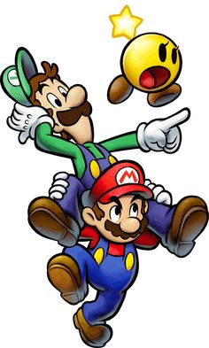

la pagina web con las reseñas mas rapidas del lejano oeste
reseña mario y luigi

Los hermanos Mario regresan en Mario & Luigi Superstar Saga + Secuaces de Bowser para Nintendo 3DS, un remake del juego original lanzado para Game Boy Advance que cuenta, además con un novedoso modo llamado "Secuaces de Bowser" y con los que nuestros hermanos favoritos demuestran seguir a pleno rendimiento con el paso de los años. ¡Secuaces, a formar!
Cada vez más lejos queda el E3 2017, la gran feria del videojuego en la que se anunció Mario & Luigi Superstar Saga + Secuaces de Bowser para Nintendo 3DS. Ahora bien, parece que Nintendo le está cogiendo el gustillo a realizar remakes de sus mejores juegos y mientras que hace unas semanas le tocó a nuestra cazarrecompensas favorita Samus con Metroid: Samus Returns, ahora es el turno de los icónicos hermanos Mario con un remake de Mario & Luigi Superstar Saga, tercer Mario RPG y primera entrega de la saga Mario & Luigi lanzada en el año 2003 para Game Boy Advance.